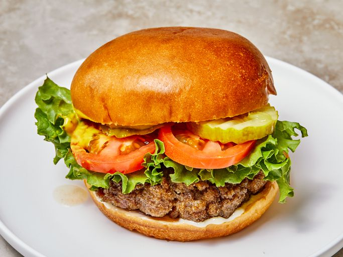

Burger

Indulge in the ultimate burger experience with our Juicy Homemade Hamburger. Crafted from perfectly seasoned ground beef, each patty is grilled to juicy perfection, offering a mouthwatering blend of flavors and textures. The sizzle of the grill and the enticing aroma will captivate your senses as you assemble this masterpiece. Topped with your favorite cheese and an array of fresh, crisp vegetables, this hamburger is a celebration of classic American comfort food. Bite into the succulent juiciness of the beef, complemented by the melty cheese and the satisfying crunch of the toppings, all nestled within a lightly toasted bun. Elevate your burger game with this irresistible creation that promises to satisfy your cravings for a truly remarkable and juicy dining experience.
Ingredients
- 1 pound ground beef (80% lean, 20% fat)
- Salt and pepper to taste
- 4 hamburger buns
- 4 slices of your favorite cheese
- Lettuce, tomato, onion, pickles, and condiments of choice
Instructions
- Preheat your grill or stovetop pan over medium-high heat.
- Divide the ground beef into 4 equal portions and shape them into burger patties. Season both sides generously with salt and pepper.
- Grill the burgers for about 4-5 minutes per side for medium doneness, adjusting the time based on your preferred level of doneness.
- During the last minute of cooking, add a slice of cheese to each patty, allowing it to melt.
- Toast the hamburger buns on the grill for a minute or until they're lightly golden.
- Assemble your burgers by placing the patties with melted cheese on the bottom half of each bun.
- Top with lettuce, tomato slices, onion rings, pickles, and your favorite condiments.
- Cap off with the other half of the bun and press gently.